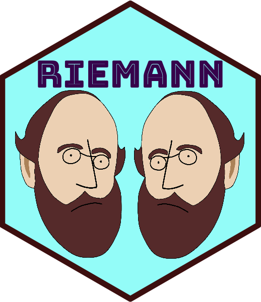

Manifold-to-Scalar Kernel Regression with K-Fold Cross Validation
Source:R/inference_m2skregCV.R
riem.m2skregCV.RdSelects a Gaussian kernel bandwidth by the sum of squared held-out prediction errors over all folds, then fits the selected smoother to all observations. A candidate is eligible only if every fold has a finite loss. Failed candidates remain in the returned tables with infinite total loss and a recorded reason. If no candidate succeeds, fitting stops with an error. Equal losses are resolved by choosing the first candidate in the supplied order.
Usage
riem.m2skregCV(
riemobj,
y,
bandwidths = seq(0.01, 1, length.out = 10),
geometry = NULL,
kfold = 5,
foldid = NULL
)Arguments
- riemobj
A
riemdataobject containing the training predictors.- y
A finite numeric response vector with one entry per predictor.
- bandwidths
A nonempty vector of finite, strictly positive bandwidths.
- geometry
Geometry name or specification.
NULLresolves the input's geometry, defaulting to its intrinsic geometry when unspecified. Legacy"intrinsic"and"extrinsic"aliases are accepted.- kfold
Integer number of folds between two and the sample size. Random balanced folds use R's current random-number state. When
foldidis supplied, an explicitly suppliedkfoldmust agree with its number of distinct folds.- foldid
Optional vector of fold identifiers, one per observation, with at least two distinct nonmissing identifiers. Numeric identifiers must be finite; character and factor identifiers must be nonempty. Observations with the same identifier are held out together. Use this to encode grouped or otherwise scientifically appropriate validation splits.
Value
An m2skreg fit retaining ypred, bandwidth, and
inputs, with the geometry metadata of riem.m2skreg.
ypred contains full-training fitted values. errors is a
two-column matrix of all candidate bandwidths and total CV SSE;
fold_errors and fold_failure have candidates in rows and folds
in columns. candidate_status records success or failure,
foldid stores the supplied/generated fold identifiers, and
cv_prediction contains held-out predictions for the selected candidate.
Details
Distances are computed once under the resolved geometry. This is appropriate only when preprocessing defining that geometry was fixed independently of the held-out observations. This function does not fit data-dependent alignment, scaling, or other preprocessing inside each fold; such pipelines require an external resampling loop. The selected CV loss is a tuning criterion, not an unbiased estimate of final predictive performance.
Examples
X <- wrap.euclidean(matrix(0:5, ncol = 1))
fit <- riem.m2skregCV(X, c(0, 3, 0, 0, 0, 0),
bandwidths = c(0.1, 0.5, 1, 2, 10), foldid = rep(1:3, each = 2))
fit$errors
#> bandwidth SSE
#> [1,] 0.1 18.00000
#> [2,] 0.5 17.91148
#> [3,] 1.0 13.40674
#> [4,] 2.0 11.14529
#> [5,] 10.0 11.24906
fit$cv_prediction
#> [1] 0.0000000 0.0000000 1.0939092 0.7518321 0.4997177 0.3656211